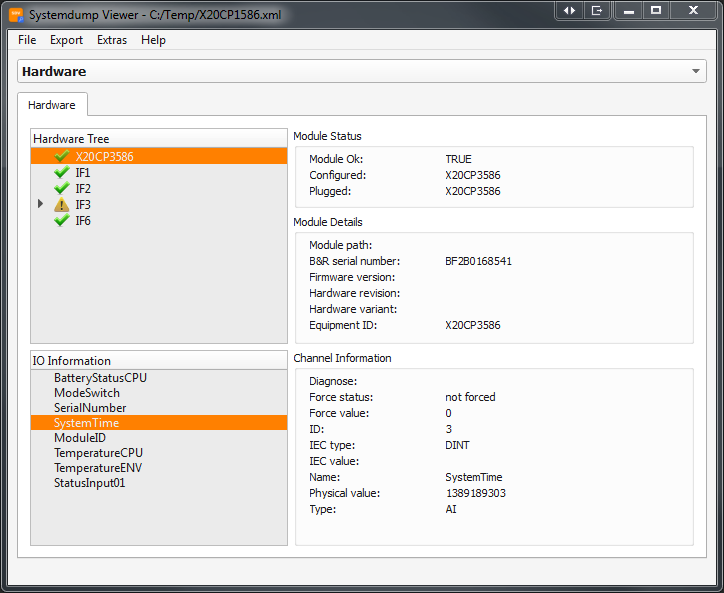
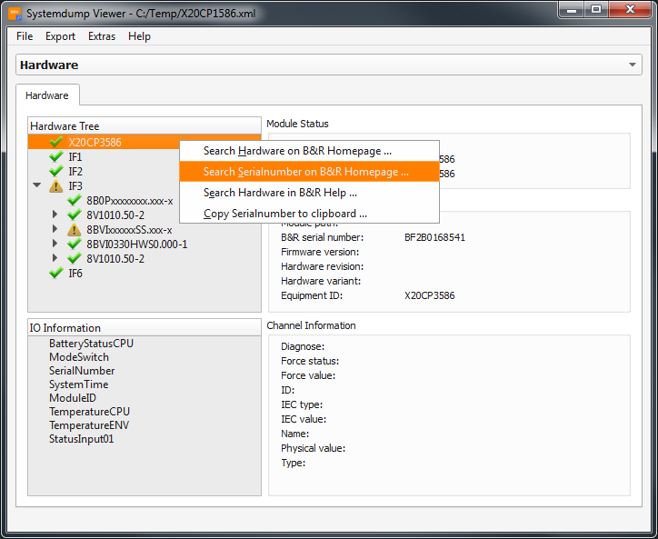
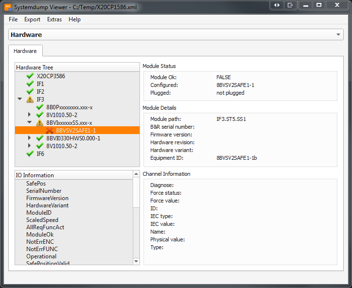

Hints: • Press "F1" key to open the selected hardware in B&R help • Check out the options to define, what happens when you double click on a module!
   The section "Hardware" shows the hardware in a tree-view. In the lower window you can also browse the different IO channels to see their values. By clicking the interfaces you can open for example the POWERLINK bus and see all modules in the POWERLINK network. You also can see if a sub module is not connected by the warning sign. If you execute a right click on a module, you will get a menu where you can choose between the following actions:| • ../Startpage |
| • Exploring: Main screen |
| • Exploring: System |
| • Exploring: Software |
| • Exploring: Motion |
| • Exploring: Logger |
| • Exploring: Profiler |